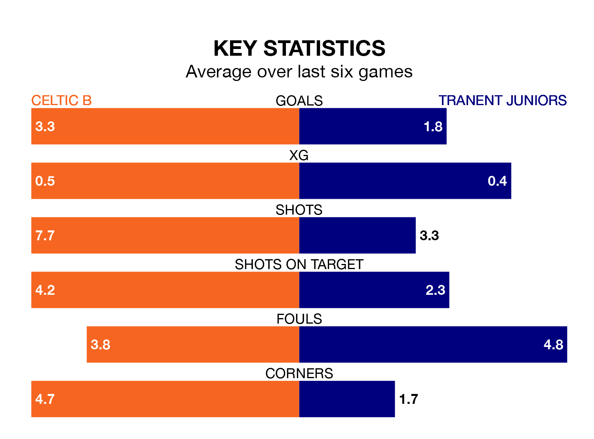

Saturday's match between Celtic B and Tranent Juniors promises to be one for the neutrals, as two of the Lowland Football League's most free-scoring sides go head-to-head.
Ahead of the game at the Excelsior Stadium, Celtic B and the Belters sit third and fourth in the goal-scoring charts, with 66 and 58 goals respectively.
another, another, another, another, another, another, another, another, another, another, another, another, another, another and another lead the way for the home side, having bagged zero goals each in their 27 games to date.
And another, another, another, another, another, another, another, another, another, another, another, another, another, another and another have been the main men in the opponents' penalty box for Tranent Juniors, with zero goals each.
Tranent Juniors are third in the table after 26 games, of which they have won 16 and drawn four, earning 52 points.
Celtic B are three places behind the Belters in sixth, with 14 wins and four draws putting them on 46 points.
The hosts are in fantastic form in the Lowland Football League, with five wins and a draw from their last six games.
With three wins and a draw over that period, the away side's form is much worse – they have taken 10 points from 18, compared to Celtic B's 16.
Over the last two years, Celtic B and Tranent Juniors have played each other twice. Celtic B won both of them.
Their last meeting was on January 21 2023, when Celtic B won 2-0 at home.
Celtic B's last match was on February 28, a 7-0 win against Civil Service Strollers.
Tranent Juniors beat Linlithgow Rose 2-1 last time out, on Tuesday.
Updated: 09:34 (UTC), 08/03/24